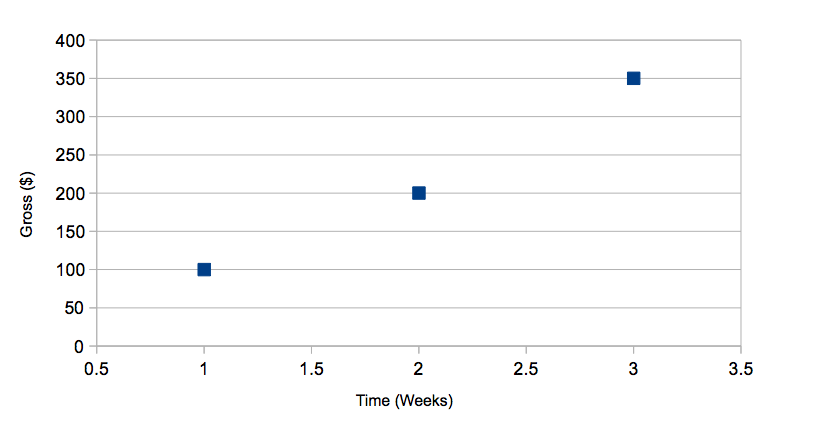
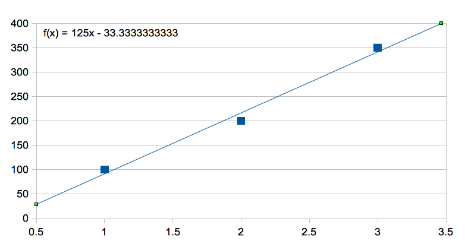
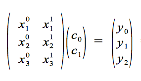
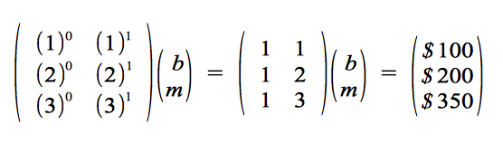
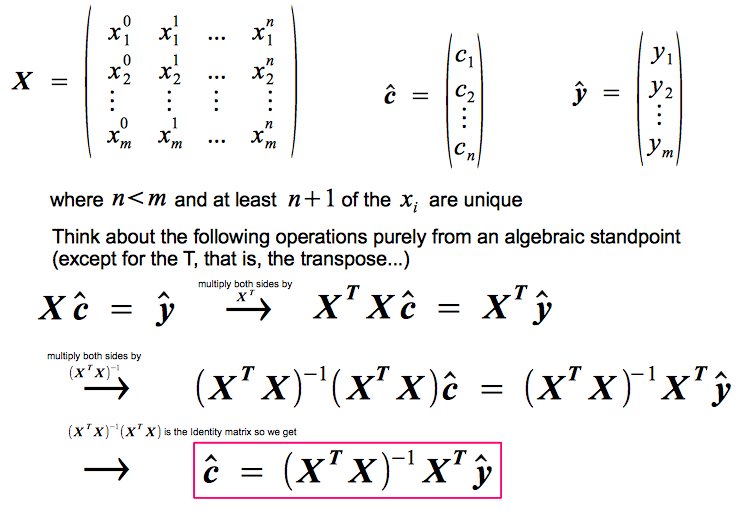
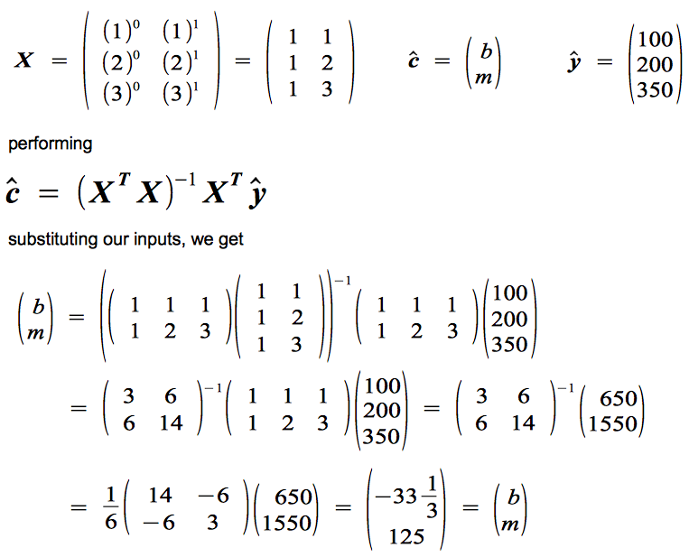
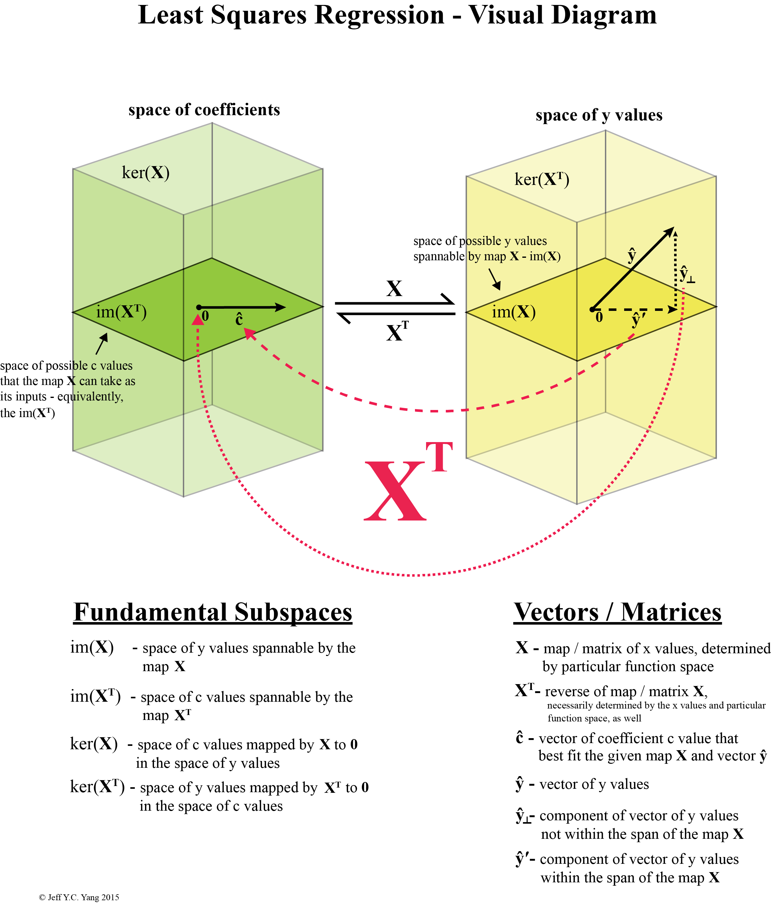
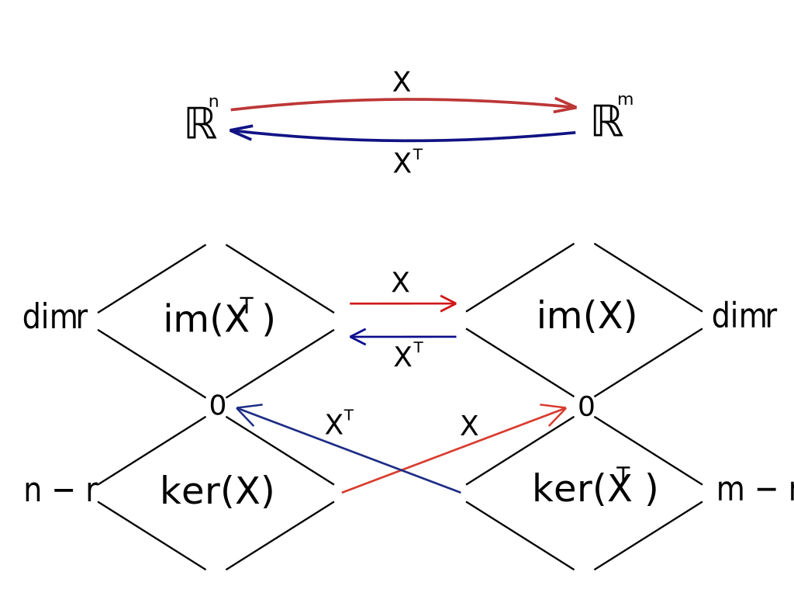

Least Squares Regression & The Fundamental Theorem of Linear Algebra
I know I said I was going to write another post on the Rubik's cube, but I don't feel like making helper videos at the moment, so instead I'm going to write about another subject I love a lot - Least Squares Regression and its connection to the Fundamental Theorem of Linear Algebra. Least Squares Regression, more generally referred to as Regression Analysis, is ultimately the process by which all algorithms for assessing relationships between variables is based on. Maybe the word 'correlation' may help. Least Squares Regression gives us a method by which we can quantify and estimate the magnitude of the correlation between two variables.
I apologize for the jargon, perhaps an example will alleviate the situation. Let's say you decided to start you're own business making, say, home-brew beer. You are doing it on the side as you already have a stable job. You're side business starts to grow much faster than you imagined. You think to yourself, maybe you could quit your current job - which you weren't exactly infatuated with, but it paid the bills - and work on this beer business full-time. But how do you quantify whether or not this a realistic endeavor? How do you judge whether or not this business can make you enough to sustain your mode of living?
Enter Least Squares Regression - the foundation which all forecasting and correlation algorithms rests upon. If you've ever used Excel to try to quantify and predict a future outcome, you've used least squares regression. I will stop here in terms of explaining least squares regression's applicability (there are enumerable articles on that - just google), instead I will elaborate on the mathematics behind how it's performed - simply because it can be done (primarily) in one of two ways, the naive way requires calculus, the elegant way requires only algebra - linear algebra (and in fact, this is how computers do it). The fact that I could solve a problem with only algebra, but which I naively assumed required calculus, has always - and will always astound me - and I hope to share that with you today.
Example of Linear Least Squares Fit for a Polynomial of Degree 1 
[taken from wikipedia]
Calculus
I will first begin with the more straightforward method, which, ironically is arguably the harder way to find a correlation function as it requires calculus. Say you are given a set of data points:
(x1,y1), (x2,y2), ...(xn,yn)
Going back to our previous example, the x value could represent, say, a week, and the y value represents the respective sales on your home-brewed beer during that week. For simplicities sake, we will use just three points:
(week 1, $100), (week 2, $200), (week 3, $350)
That is, on week 1 you made a $100 profit, on week 2 you made $200, and week 3 you made $350.
Plotting this on a Cartesian coordinate graph, you notice that the points seem to align - that is, it is possible there is a correlation between the two variables - in this case, the time and the respective sales during that time.

If you could quantify this relationship, then you'd have a very good way of forecasting your sales at a future point in time assuming you continue to grow your beer business. So how do we go about this? Think back to your elementary algebra and geometry days. Again, for simplicities sake, I've chosen three points such that they roughly lie on a straight line. Recall, the equation for a line in the Cartesian coordinate system:
f(x) = y = mx + b
y is equal to a function of x, a.k.a. f(x)
I know it's ugly and you probably hated it when you were forced to learn it, but just bear with me, I hope to make it better by the end of this post. Here we have our general equation for a straight line - m is the slope of the line, and b is its y-intercept. We want to find the function f(x) such that the sum of the squared residuals is minimized, that is:
S = (y1 - f(x1))2 + (y2 - f(x2))2 + ... + (yn - f(xn))2
Why do we have to square the residuals? Well the points could lie either above or below the best fit line, but what we care about is minimizing the magnitude of the deviation, so we square the residual so negative and positive residuals are treated equally.
Now, how do we minimize this sum of the squared residuals? Well if you remember from calculus (for those of you who've never taken calculus you can skip ahead if you'd like) we take the derivative of the summation 'function' with respect to our 'unknowns' and set it equal to zero. Then, solve that equation for our 'unknown'.
δS ⁄ δ(unknown) = 0
[δ here is the partial differential operator]
Well what are our unknowns in this case? We are given our x values and y values from our data points, so our unknowns are actually m and b, the coefficients to our equation! That is, our unknowns are the slope of the line and the y-intercept of the line we want to solve for - as we should expect. To be clear our sum function is actually a function of m and b:
S(m,b) = r1(m,b) + r2(m,b) + ... + rn(m,b)
where rn(m,b) = (yn - f(xn))2 = (yn - (m xn + b))2
in our specific example with the points (1, $100), (2, $200), (3, $350) our S(m,b) would be (dropping the dollar signs):
S(m,b) = (100 - (m + b))2 + (200 - (2m + b))2 + (350 - (3m + b))2
or
S(m,b) = 172500 - 3100m - 1300b + 12mb + 14m2 + 3b2
Now, because in this case our sum function S is a function of two variables, in order to be solved for we will need two equations. Remember a system of equations is only solvable if the number of variables to be solved for is equal to the number of unique equations given. In this case we will take the partial derivative of S, once with m, and once with b - and set each equal to zero. This gives us our two equations to be solved given our two unknowns m and b.
δS ⁄ δm = -3100 + 28m + 12b = 0
δS ⁄ δb = -1300 + 6b + 12m = 0
where δS ⁄ δm is the partial derivative of S with respect to m and δS ⁄ δb is the partial derivative of S with respect to b
Solving for this we get m = 125 , b = -33.33...

Linear Algebra
Whew! That was the naive, yet hard way to find the correlation. Now I present to you the more abstract, but more visual and conceptual method by which to view the problem. This, in fact, is the method which your computer solves for the correlation - this is exactly how Excel finds that best fit function given the input set of points. This approach is an inherent consequence of the Fundamental Theorem of Linear Algebra and is very intimately connected with the properties of spaces (vector spaces) in general.
Completely abstracting from what was done earlier, we now re-write our problem in linear algebra form:
X c = y

where X is a matrix and c and y are column vectors.
[the matrix X here is specific for finding a polynomial of degree one (that is a straight line) and has 3 rows because we have 3 points, similarly for the vector y]
X is the matrix made up of the input xn values in an arrangement specific to a particular function space (explained later...), and the c and y vectors are made up of the unknown coefficients cn and input yn values, respectively.
that is,
substituting our values for xn and yn and replacing our coefficients c0 and c1 with the familiar b and m, respectively, we get:

Notice we place our given xn values into a matrix, our unknown constants in a column vector to be multiplied with the matrix X, and our given yn values in a column vector on the other side. If we carry out the matrix multiplication shown, we'd end up with three equations yn = b + m xn.
y1 = b + m x1 = b + m = $100
y2 = b + m x2 = b + 2m = $200
y3 = b + m x3 = b + 3m = $350
Notice how these three equations are the just our equation for the line with the three respective points substituted. And now for the heart of the trick (I love using this line). I will quickly - and without any explanation - demonstrate the linear algebra operations performed to solve for the column vector that contains the unknown coefficients (below is the generalized case for solving for the best fit polynomial of the nth degree).

or in our case,

so b = -33.333...
and m = 125 as before.
And with that we have solved for our unknown coefficients - crazy isn't it? For those who have an understanding of what is going on, we have gone from using calculus to using purely algebra - linear algebra - to find our correlation function. We have, quite literally, went from needing to take derivatives, to just multiplying, adding, and subtracting in a specific order, and our outcome is the same as before. So, this begs the question, why does this work?
Our original matrix X can be thought of as a linear map (think something like the underscore map function, for those of you in my cohort) between the space of coefficients c (our unknowns, in this case b and m) to the space of y values. The reverse map, that is XT, the transpose of X, maps from the space of y values to the space of coefficient values c, in our case b and m. (refer to diagram below)
[I spent way too long making this image than I'd like to admit...]
What is conceptually happening here is that, because we only have a limited set of x values that make up our matrix X, we can not expect to be able to encompass the entire space of y values. So our general y vector well have one part residing within the space of y values that can be mapped to by X (referred to above as the image space of X or im(X)), but it will also have an orthogonal component that the map X knows nothing about. Hence, the reverse mapping of X, that is XT, cannot know anything about this orthogonal component as well. So when we map the y vector back to the space of coefficient values, the component of the y vector that is orthogonal to the image space of X is effectively mapped to 0 by the reverse map XT - we say that the orthogonal component resides within the kernel space of XT or ker(XT).
[this is a less visual, but more explicit diagram - this statement is denoted the Fundamental Theorem of Linear Algebra]
[taken from wikipedia - changed A to X to match my notation]
These are the four fundamental subspaces of a linear map and their symmetric relationships to one another: each map is really two maps mapping in opposite directions, one of which we denote the transpose of the other (in our case X and XT). Kernel spaces are mapped to 0 and 0 is a unique point in a vector space.
The heart of the trick really is the multiplication of the equation via XT - that the incomplete knowledge of the original map X allows us to use its backwards map as a method of finding the best approximation via the given input information (recall that the given information, the x values, determine the map X). After that, we merely perform standard algebraic operations to solve for the vector of our coefficients via c = (XTX)-1XTy. This concept really had me dumbfounded when I first understood it, and it continues to perplex me to this day. Before then, I had only known how to solve for the correlation function via calculus and to realize I could do the same with merely addition, subtraction, and multiplication in a specific order was astonishing for me to realize.
In this example I've only demonstrated how to find the best fit straight line that fits the data in question. However, it is quite a natural extension to extrapolate these same principles and find the best polynomial curve of any order less than the number of data points that are unique in their inputs (the x values). Abstracting further, you can find the best fit exponential, trigonometric, or logarithmic curve - in fact, you can find the best fit of any type of function from what's called a function space - so long as they are 'complete' (this usage of the word may be slightly off, but what I mean by complete is if you had all infinite orders of said functions, they can span the entire space being mapped to).
Unfortunately, it appears this post has become too lengthy, so I will postpone the astonishing abstractions for a future post. Again, if you've made it this far, congratulations. I hope there was at least some semblance of coherent logic that you were able to follow. I've made a web application you can clone at https://github.com/jeffycyang/least-squares-visualizer that will return the best fit polynomial (of any degree), exponential, logarithmic, or trigonometric function (of any whole number order) of your choosing given a set of data you input (I've now deployed it here!). It also now graphs it which is really neat to look at, but it's still a work in progress so you're welcome to contribute if you'd like. As always, stay happy, stay passionate, stay strong - and take care of yourselves.